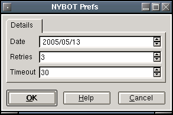

NYBOT Plugin
Description:
EOD futures quotes from the New York Board of Trade.
Input Parameters:
- Date - The date of the EOD data requested.
- Retries - The number of download attempts to make due to errors.
- Timeout - The timeout in seconds if a download stalls before a
retry is attempted.
